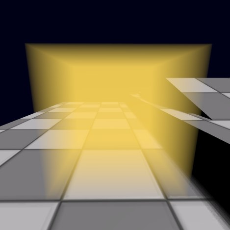
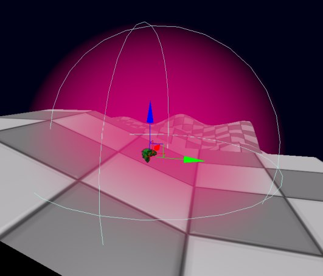
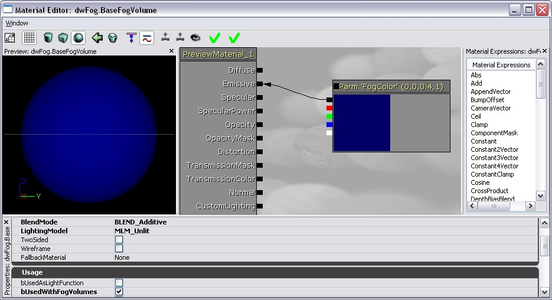

UDN
Search public documentation:
FogVolumesKR
English Translation
日本語訳
中国翻译
Interested in the Unreal Engine?
Visit the Unreal Technology site.
Looking for jobs and company info?
Check out the Epic games site.
Questions about support via UDN?
Contact the UDN Staff
日本語訳
中国翻译
Interested in the Unreal Engine?
Visit the Unreal Technology site.
Looking for jobs and company info?
Check out the Epic games site.
Questions about support via UDN?
Contact the UDN Staff
포그 볼륨
문서 변경내역: 2008/09/08 Daniel Wright 최종 업데이트. 홍성진 번역.
버전
QA_APPROVED_BUILD_APRIL_2007: 바로 직후에 포그 볼륨에 의한 반투명 포깅도 지원되었습니다.
QA_APPROVED_BUILD_MAY_2007: 파티클 포깅이 가능해졌습니다. 또한 constant height density(불변 고도 농도) 함수가 제거되었는데, 클리핑 메시를 가지고 constant density(불변 농도) 함수에 통과시켜 같은 함수성을 낼 수 있기 때문입니다. 이 방법이 컴파일되는 셰이더의 수가 적기에 실제로 더욱 효율적이기도 합니다.
QA_APPROVED_BUILD_FEB_2008: 자동 구성 방법이 추가되었습니다. 그 전에는 수동 구성 방법만 지원됐었습니다.
QA_APPROVED_BUILD_APR_2008: 셰이더 복잡도에 포그 볼륨 비용이 포함되도록 확장되었습니다.
QA_APPROVED_BUILD_JUL_2008: 농도 세팅을 0으로 하면 bEnabled=False 과 동일한 것으로 처리합니다.
포그 볼륨이란?
구성 방법
빠른 자동 구성
- (액터 클래스 브라우저->Info->FogVolumeDensityInfo 에서) FogVolumeConstantDensityInfo 를 놓습니다.

constant density fog volume(불변 농도 포그 볼륨)을 놓고 난 모습입니다.
자동 구성 세부사항
- 포그 볼륨 인포 상의 DrawScale3d 를 1.0에서 바꿔버리면 AutomaticMeshComponent 가 더이상 포그 볼륨 인포의 크기와 일치되지 않게 됩니다.
- 구체형 포그 볼륨 인포를 새로 놓을 때, AutomaticMeshComponent 가 포그 볼륨 인포에 꼭 맞게 묶이도록 DrawScale X, Y, Z가 구성됩니다.
- AutomaticMeshComponent->PrimitiveComponent->Scale, Translation 등을 바꿔서 AutomaticMeshComponent 의 포지션과 스케일을 포그 볼륨 인포에 상대적으로 제어할 수 있습니다.
- 포그 볼륨 인포를 새로 만들 때, 레벨에 머티리얼 인스턴스가 새로 만들어지며 자동으로 AutomaticMeshComponent 에 적용됩니다. 이는 FogMaterial 로 설정됩니다. 콘텐츠 브라우저에서 머티리얼을 선택한 상태라면 그 머티리얼이 부모로 사용될 것이고, 아니면 EngineMaterials.FogVolumeMaterial 이 부모가 됩니다. 새로 생긴 이 머티리얼 인스턴스는 어떤 포그 볼륨 호환 머티리얼로 대체해도 됩니다만, AutomaticMeshComponent 상의 실제 Materials 배열을 바꾸기 보다는 꼭 인포 액터의 FogMaterial 을 바꾸시기 바랍니다.
- 포그 볼륨 인포의 편의용 속성 SimpleLightColor 가 AutomaticMeshComponent 의 머티리얼 인스턴스 내 'EmissiveColor' 벡터 파라미터로 설정될 것입니다. 머티리얼 인스턴스를 덮어쓰면 'EmissiveColor' 벡터 파라미터를 사용하지 않으니, SimpleLightColor 가 더이상 기능하지 않게 됩니다.
- AutomaticMeshComponent 는 수동 방법으로 사용된 메시와는 달리 에기터에서 선택할 수 없습니다. 대신 포그 볼륨 인포 액터 자체를 선택해야 합니다.
- AutomaticMeshComponent 에는 콜리전, 라이팅, 섀도잉 플랙이 모두 적절히 설정되어 있을 것입니다.
빠른 수동 구성
- 닫힌 스태틱 메시를 놓습니다.
- (액터 클래스 브라우저->Info->FogVolumeDensityInfo 아래의) FogVolumeConstantDensityInfo 를 놓습니다.
- 새로이 놓인 포그 인포의 AutomaticMeshComponent 를 지웁니다.
- 스태틱 메시를 인포 액터의 FogVolumeActors 배열에 추가시킵니다.
- 이를 위해 먼저 놓은 FogVolumeConstantDensityInfo 의 속성을 열고 DensityComponent 를 펼칩니다.
- 속성 창 좌상단의 잠금 버튼을 클릭합니다.
- 뷰포트에서 스태틱 메시를 선택합니다.
- 속성 창은 잠궜으니 그대로 인포 액터가 나타날 것입니다.
- + 를 클릭하여 FogVolumeActors 배열에 항목을 추가합니다.
- 새로 생긴 항목에서 '선택된 액터 사용' 버튼을 클릭합니다.

FogVolumeActors 배열에 스태틱 메시를 설정합니다. 이 시점에서 스태틱 메시는 포그 볼륨으로써 렌더링될 것입니다.
수동 구성 세부사항
- FogVolumeActors 항목을 새로 추가하면 콜리전, 라이팅, 섀도잉이 꺼진 상태인 디폴트 포그 볼륨 세팅으로 구성됩니다. 새로운 FogVolumeActor 의 메시 컴포넌트 머티리얼은 EngineMaterials.FogVolumeMaterial 을 사용하도록 변경되기도 합니다. 이를 덮어쓰려면 대상 FogVolumeActor 항목에 머티리얼을 설정하면 FogMaterial 이 수동 구성에는 사용되지 않습니다. 주: 속성 시스템의 제한때문에 현재 항목을 새로 추가할 때 FogVolumeActors 배열의 모든 항목이 디폴트로 설정됩니다! FogVolumeActors 배열의 모든 항목을 먼저 설정한 다음 나중에 그 머티리얼을 설정하는 것이 최선입니다.
- 수동 구성을 사용하면 하나의 포그 볼륨 정보에 여러개의 메시를 연결시킬 수 있으며, 그를 통해 인포나 메시를 별도로 애니메이팅시킬 수도 있습니다. 그러나 쉬운 자동 구성과는 달리 여러 부분을 구성하고 애니메이팅시키는 작업은 꽤나 더딜 수 있습니다.
농도 함수
FogVolumeConstantDensityInfo
모두 다 똑같은 농도를 갖는 함수로, Density 변수를 통해 설정됩니다.
constant density 함수로 렌더링된 큐브입니다. 농도가 전부 똑같으니 포그 인포 액터의 위치는 중요치 않습니다.
FogVolumeLinearHalfspaceDensityInfo
평면과 선형 농도가 공동으로 작용하여 정의된 함수입니다. 평면의 절반공간 한 쪽은 안개속에 있게 됩니다. 이 평면은 인포 액터를 회전 및 이동시켜 임의로 회전 및 배치시킬 수 있습니다. 이 함수의 농도는 평면과의 거리에 따라 증가되므로, 평면에서의 농도는 0이고, 1의 거리에서는 PlaneDistanceFactor가 됩니다. 선형 농도는 카메라가 평면에 있을 때도 절반공간이 하드 에지를 이루지 않도록 합니다.
linear halfspace density 함수는 큐브 메시에 의해 묶입니다. 농도는 평면에서 0으로 시작했다가 평면에서 멀어질 수록 증가됩니다. 이 예제에서는 xy 평면으로 방향이 맞춰져 있습니다만 어느 방향도 가능합니다.
FogVolumeSphericalDensityInfo
농도가 중심에서는 MaxDensity 로 최대였다가 멀어지면서 이차적으로 감쇠되어 구체 반경 가장자리에서는 0으로 떨어져, 부드러운 에지를 내는 함수입니다. 구체의 중심은 인포 액터의 위치로 정의되며, 인포 액터의 스케일은 반경 스케일을 조절합니다.

부드러운 에지를 갖는 spherical density 함수입니다. 첫 그림에서는 보이지 않는 메시로 묶여(bound)있는데, 구체를 둘러싸지(clip) 않기 때문입니다. 둘째 그림에서는 메시가 구체를 둘러싸고 있습니다. 프리뷰 컴포넌트가 와이어프레임으로 sphere density 함수의 규모를 나타냅니다.
부가적인 농도 함수
위의 함수를 통해 원하는 감쇠 효과를 낼 수 없는 경우, 먼저 머티리얼을 만져 보시기 바랍니다. 예를 들어 에지를 더욱 부드럽게 하려는 경우, 구체 상의 포그 볼륨 머티리얼에 있는 프레넬(fresnel)을 써 보시기 바랍니다. 주의할 점(catch)은 포그 볼륨의 뒷면만 렌더링되기에, 전통적인 프레넬 노드가 아니라 노멀을 보는 사람 쪽으로 향하도록 미러링시켜 줘야 한다는 것입니다. 부가적인 density 함수를 코드에 추가시킬 수도 있습니다.부가적인 세팅

FogVolumeSphericalDensityInfo 의 속성.
bEnabled
포그 볼륨을 끄고 켜기 위해 사용하는 속성입니다.StartDistance
보는 사람에서부터 월드 단위로 이만큼 떨어진 거리에서부터 안개를 시작시킵니다. 이는 현재 linear halfspace density 함수에는 지원되지 않습니다.Density, PlaneDistanceFactor, MaxDensity
각 농도 유형에 대한 포그 볼륨의 농도를 제어합니다. 이 값 중 하나라도 0이 있으면 기능적으로는 bEnabled=False 와 같습니다.포그 볼륨 액터
포그 볼륨 머티리얼
- 라이팅 모델은 Unlit(라이팅제외)
- 블렌드 모드는 반투명 모드 (Translucent, Additive, Modulative) 중 하나
- 이미시브 입력이 있어야 합니다.
- bUsedWithFogVolumes 를 체크해야 합니다. 주: 이 플랙은 다른 사용 플랙과 같이 쓸 수 없으므로, 설정하고 나면 포그 볼륨의 머티리얼만 사용할 수 있습니다.

최소한의 포그 볼륨 머티리얼 구성입니다. Opacity(불투명)의 디폴트는 1이니 지정해 줄 필요가 없습니다. 머티리얼의 Emissive(방출) 입력이 포그 볼륨 색, Opacity(불투명) 입력이 포그 공헌 스케일이며, 포그 볼륨을 통한 거리로부터 계산됩니다.
머티리얼 제한사항
머티리얼을 적용할 때는 포그 볼륨 액터의 뒷면만이 그려지는데, 카메라가 그 안에 있을 때도 포그 볼륨이 그려질 수 있게 하기 위해서는 필수입니다. 이는 텍스처링에도 영향을 끼칩니다. 텍스처가 포그 볼륨 메시의 뒤에만 적용되는 것입니다. 텍스처를 사용하는 볼류메트릭 라이팅 트릭에 대한 것은, 볼류메트릭 라이팅 가이드 페이지를 참고해 보시기 바랍니다. 노멀, 리플렉션 벡터같은 다른 메시 특성에도 영향을 끼칩니다.하이트 포그 상호작용
포그 볼륨 내의 투명

포그 볼륨에 교차되는 투명 오브젝트가 제대로 포깅될 수 있도록 ApproxFogLightColor 멤버를 설정합니다. 포그 볼륨에 교차되는 투명 오브젝트 상의 안개에는 다음과 같은 제한사항이 있습니다:
- 안개는 버텍스별로 계산됩니다. 부작용을 최소화하기 위해 투명 메시의 테셀레이션을 늘이고 큰 반투명 메시를 피합니다.
- 포그 볼륨 메시로부터의 둘러싸기(clipping)에 의한 안개 전이는 표현 불가능합니다. 대신 안개를 둘러싸는 데는 포그 볼륨 메시의 축 정렬된 바운딩 박스가 사용됩니다. 포그 함수로부터의 안개 전이(, 예를 들면 Spherical Density 함수의 구체 가장자리)는 제대로 계산됩니다.
- 하나의 투명 오브젝트에서 추정할 수 있는 최대 안개 상호작용은, 하이트 포그 레이어 넷에 포그 볼륨 하나입니다.
- 변조식 블렌드 모드를 사용하는 투명 머티리얼은 하이트 포그든 포그 볼륨이든, 전혀 포깅되지 않습니다.
- 스키닝된 메시(스켈레탈 메시 또는 스켈레탈 메시 데칼)에 적용된 투명 머티리얼은 포그 볼륨에 의해 포깅되지 않습니다.
성능 영향
- 겹치는 포그 시트의 수가 작은 경우
- 카메라가 안개속으로 들어갈 일이 없거나, 들어가도 안개 페이드 아웃에는 신경쓸 필요가 없는 경우
- 반투명이 안개와 교차하지 않거나, 부작용이 보이지 않는 경우